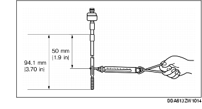

Steering gear and linkage inspection
Tie-rod End Inspection
1. Inspect the tie-rod end for damage and excessive play.
2. Inspect the boot for cracks.
3. Rotate the ball joint 5 times.
4. Measure the rotational torque of the tie-rod end using the SST and a pull scale.

Tie-rod end rotational torque
- 0.42-2.60 N·m {4.3-26.5 kgf·cm, 3.8-23.0 in·lbf}
- [Pull scale reading: 4.2-26.0 N {0.43-2.65 kgf, 0.95-5.84 lbf}]
Tie rod Inspection
1. Inspect for damage, bending and excessive play.
2. Swing the ball joint 5 times.
3. Measure the swing torque using a pull scale.

Tie rod swing torque